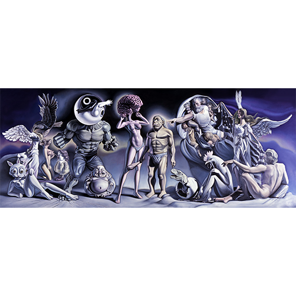
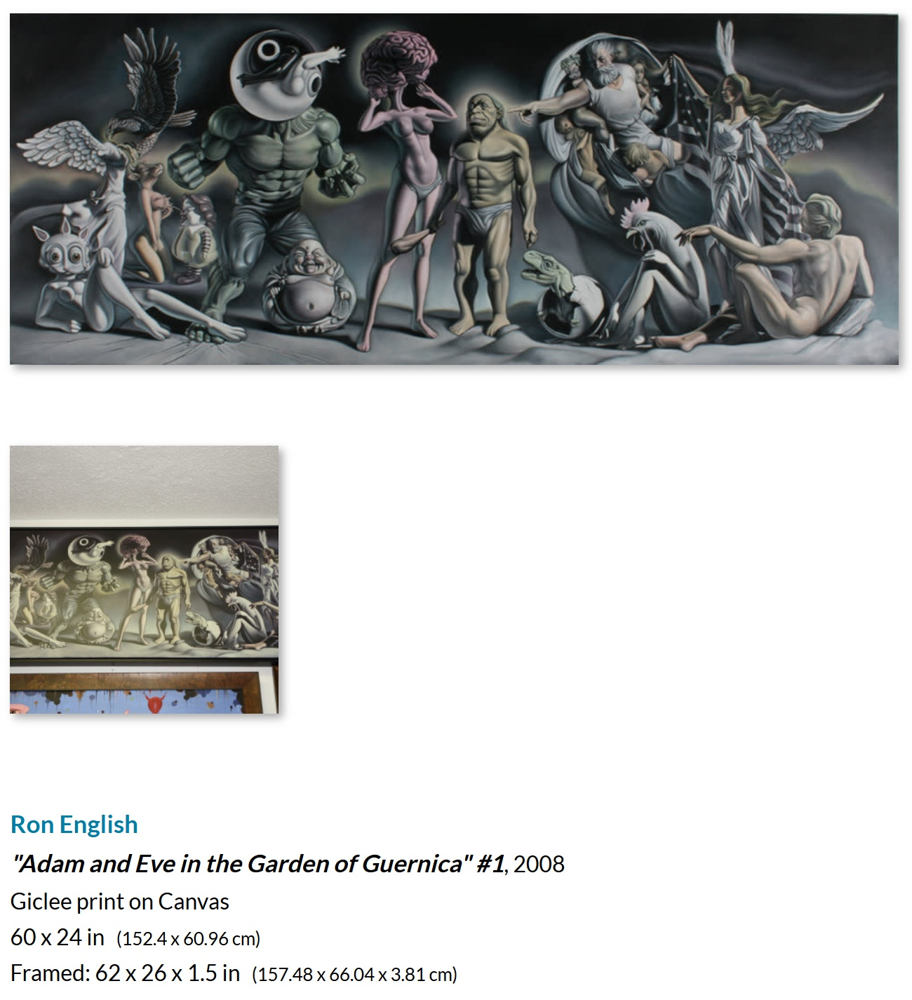

Literature
Ron English, Fauxlosophy (Darlington: Carpet Bombing Culture, 2016), p. 160. ISBN 978-1-908211-45-3.
Ron English, Death and the Eternal Forever (London: Korero Press, 2014), p. 156. ISBN 978-0957664920.
Ron English, Status Factory: The Art of Ron English (San Francisco: Last Gasp of San Francisco, 2014), p. 132. ISBN 978-0867197891.
Ron English, Original Grin: The Art of Ron English (Paris: Cernunnos, 2019), p. 223. ISBN 978-2374950938.
Notes
This image appears on Vasyl Voziyan’s SoundCloud page, available here, accessed April 16, 2026.
This composition was later reproduced by the artist as a giclée print on canvas. Artwork Archive records “Adam and Eve in the Garden of Guernica” #1 as a 2008 giclée print on canvas measuring 60 × 24 inches, with framed dimensions of 62 × 26 × 1.5 inches, from the collection of Gino Joukar, available here, accessed April 16, 2026.
This work references Pablo Picasso’s Guernica.

Ancillary Documentation
